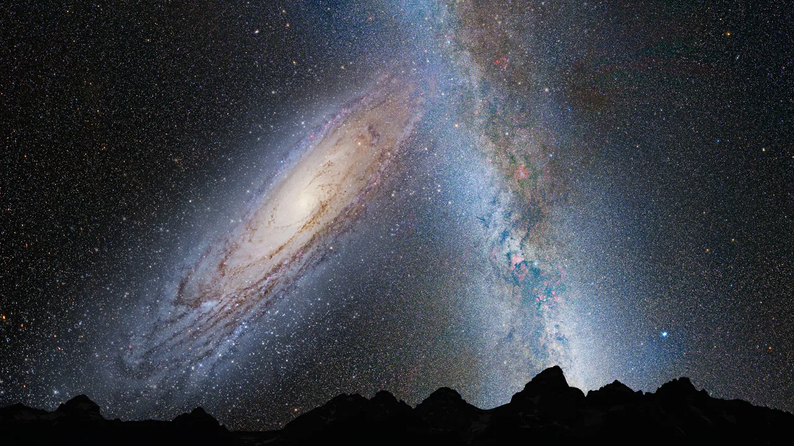

Galactic cities
Galaxies come in a diverse array of shapes, sizes, and compositions, each offering a unique glimpse into the cosmic tapestry of the universe. Spiral galaxies, characterized by graceful arms of stars and dust swirling around a central bulge, such as the Milky Way, showcase stunning beauty and complexity. Elliptical galaxies, on the other hand, appear as smooth, football-shaped clouds of stars, while irregular galaxies defy classification with their chaotic shapes and structures.
Within galaxies, stars congregate in vast stellar cities, forming intricate patterns and arrangements that define each galaxy's character. From densely packed regions of star formation to ancient stellar populations orbiting galactic cores, stars play a central role in shaping the structure and evolution of galaxies over billions of years.
Dark matter, an elusive form of matter that does not emit, absorb, or reflect light, exerts a powerful gravitational influence on galaxies. It dominates the mass of galaxies, providing the gravitational glue that holds them together and shapes their overall structure. By studying the motions of stars and gas within galaxies, astronomers can infer the presence of dark matter and unlock the mysteries of its nature and distribution.
Galaxies are not static entities but dynamic systems that evolve over cosmic time. They grow and evolve through mergers, collisions, and interactions with neighboring galaxies, triggering bursts of star formation, fueling the growth of supermassive black holes, and reshaping their structures in the process. Galactic collisions, while rare on human timescales, play a crucial role in the cosmic dance of galaxy formation and evolution.
Observing galaxies presents unique challenges due to their immense distances and diverse properties. Telescopes, both ground-based and space-based, equipped with advanced imaging and spectroscopic techniques, allow astronomers to study galaxies across the electromagnetic spectrum, from radio waves to gamma rays. These observations have led to groundbreaking discoveries, including the existence of supermassive black holes at the centers of galaxies, the nature of dark matter, and the history of cosmic expansion.
Our home galaxy and andormeda on a collision course
In the vast theater of the cosmos, a breathtaking cosmic ballet is underway as the Milky Way and Andromeda galaxies prepare for a collision of cosmic proportions. Over billions of years, these galactic giants have been slowly but steadily drawn together by the irresistible pull of gravity. Now, their fateful rendezvous is approaching, promising a spectacle that will reverberate throughout the universe.
As the Milky Way and Andromeda draw nearer, their spiral arms will intertwine, stars will scatter like cosmic fireworks, and supermassive black holes will engage in a cosmic dance of destruction and creation. While the collision will reshape the galaxies' structures, the chances of individual stars colliding are remarkably slim due to the vast distances between them. However, the night sky as seen from any surviving planets will be forever transformed, with the emergence of a new, merged galaxy—a testament to the enduring power of cosmic forces.
For astronomers, this collision offers an unprecedented opportunity to witness the evolution of galaxies on a grand scale. By studying the aftermath of the collision, scientists hope to unlock the secrets of galactic formation, black hole dynamics, and the nature of dark matter. While the collision itself lies in the distant future, its impact will ripple through the cosmos, shaping the destiny of stars and galaxies for eons to come.